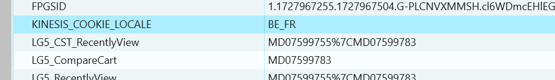
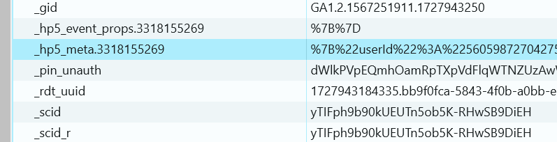

Ik denk niet dat ik de cookie heb gevonden die opslaat welke tv's je aanduidt voor te vergelijken op de website van lg.
Hieronder wel een screenshot met aangeduid wat ik denk dat de cookie hiervoor zou kunnen zijn.
Ik herkende wel andere elementen op de website, ik zag de cookie die mijn gekozen taal bijhield:
En ik zag een meta-element.
